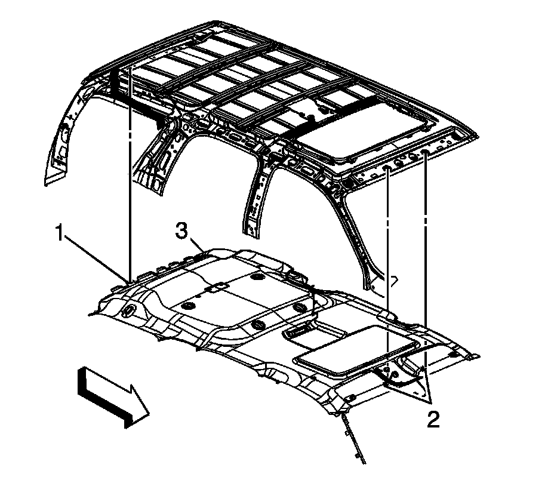

Headlining Trim Panel Replacement (SWB w/CF5 and U42)
Headlining Trim Panel Replacement (SWB w/CF5 and U42)
Removal Procedure

1. Disable roof rail SIR system. Refer to SIR Disabling and Enabling .
2. Remove front assist handle. Refer to Front Assist Handle Replacement .
3. Remove windshield garnish molding. Refer to Windshield Pillar Garnish Molding Replacement .
4. Remove the sunshade assembly and the sunshade retainers. Refer to Sunshade Replacement .
5. Remove roof console assembly. Refer to Roof Console Replacement .
6. Remove front door sill plate. Refer to Front Side Door Sill Plate Replacement .
7. Remove rear door sill plate. Refer to Rear Side Door Sill Plate Replacement (Extended Wheelbase) Rear Side Door Sill Plate Replacement (Standard Wheelbase) .
8. Remove center pillar lower molding. Refer to Center Pillar Lower Garnish Molding Replacement .
9. Remove center pillar upper molding. Refer to Center Pillar Upper Garnish Molding Replacement .
10. Remove lock pillar molding. Refer to Body Lock Pillar Garnish Molding Replacement (Avalanche/Escalade EXT) Body Lock Pillar Garnish Molding Replacement (Extended Wheelbase) Body Lock Pillar Garnish Molding Replacement (Standard Wheelbase) .
11. Remove back body opening molding. Refer to Rear Door Upper Garnish Molding Replacement .
12. Remove body rear corner upper molding. Refer to Body Rear Corner Garnish Molding Replacement (Tahoe/Suburban) .
13. Remove coat hooks. Refer to Coat Hook Replacement .
14. Remove sunroof panel window molding. Refer to Garnish Molding Replacement - Sunroof Panel Window (Crew Cab) .
15. Remove rear overhead console. Refer to Video Display Replacement (Second Row) Video Display Replacement (Third Row) .
16. Place rear seats in stowed position.
17. Remove front seat headrest.
18. Remove the instrument panel upper trim pad. Refer to Instrument Panel Upper Trim Panel Replacement (Cadillac) Instrument Panel Upper Trim Panel Replacement (Except Cadillac) .
19. Remove the roof assist handles. Refer to Front Assist Handle Replacement and Roof Rail Rear Assist Handle Replacement .
20. Remove the front seat. Refer to Front Seat Replacement - Bucket .
21. Remove the second row right seat. Refer to Rear Seat Replacement (Avalanche/Escalade EXT) Rear Seat Replacement (Tahoe/Yukon/Escalade with Bucket) Rear Seat Replacement (Tahoe/Yukon/Escalade with Split Bench) .
22. Remove the third row right seat. Refer to Rear Number 2 Seat Replacement (Suburban/Yukon XL) Rear Number 2 Seat Replacement (Tahoe/Yukon/Escalade) .
23. Disconnect the electrical harness retainers from the windshield pillars.
24. Disconnect the electrical harness from the BEC under the steering column. Route the wires out.
25. Remove the right side rear quarter trim. Refer to Rear Quarter Trim Panel Replacement - Right Side (Extended Wheelbase) Rear Quarter Trim Panel Replacement - Right Side (Standard Wheelbase) .
26. Remove the rearview mirror trim and disconnect the electrical connectors. Refer to Rearview Mirror Replacement .
27. Remove the headliner trim panel retainer.
28. Note routing of the wire harness and remove the headliner trim panel assembly.
Installation Procedure
1. Install the headliner trim panel assembly.
2. Install the headliner trim panel retainer.
3. Install the rearview mirror trim and connect the electrical connectors. Refer to Rearview Mirror Replacement .
4. Install the right side rear quarter trim. Refer to Rear Quarter Trim Panel Replacement - Right Side (Extended Wheelbase) Rear Quarter Trim Panel Replacement - Right Side (Standard Wheelbase) .
5. Connect the electrical harness to the BEC under the steering column.
6. Connect the electrical harness retainers to the windshield pillars.
7. Install the third row right seat. Refer to Rear Number 2 Seat Replacement (Suburban/Yukon XL) Rear Number 2 Seat Replacement (Tahoe/Yukon/Escalade) .
8. Install the second row right seat. Refer to Rear Seat Replacement (Avalanche/Escalade EXT) Rear Seat Replacement (Tahoe/Yukon/Escalade with Bucket) Rear Seat Replacement (Tahoe/Yukon/Escalade with Split Bench) .
9. Install the front seat. Refer to Front Seat Replacement - Bucket .
10. Install the roof assist handles. Refer to Front Assist Handle Replacement and Roof Rail Rear Assist Handle Replacement .
11. Install the instrument panel upper trim pad. Refer to Instrument Panel Upper Trim Panel Replacement (Cadillac) Instrument Panel Upper Trim Panel Replacement (Except Cadillac) .
12. Install front seat headrest.
13. Install rear overhead console. Refer to Video Display Replacement (Second Row) Video Display Replacement (Third Row) .
14. Install sunroof panel window molding. Refer to Garnish Molding Replacement - Sunroof Panel Window (Crew Cab) .
15. Install the coat hooks. Refer to Coat Hook Replacement .
16. Install the body rear corner upper molding. Refer to Body Rear Corner Garnish Molding Replacement (Tahoe/Suburban) .
17. Install the back body opening molding. Refer to Rear Door Upper Garnish Molding Replacement .
18. Install the lock pillar molding. Refer to Body Lock Pillar Garnish Molding Replacement (Avalanche/Escalade EXT) Body Lock Pillar Garnish Molding Replacement (Extended Wheelbase) Body Lock Pillar Garnish Molding Replacement (Standard Wheelbase) .
19. Install the center pillar upper molding. Refer to Center Pillar Upper Garnish Molding Replacement .
20. Install the center pillar lower molding. Refer to Center Pillar Lower Garnish Molding Replacement .
21. Install the rear door sill plate. Refer to Rear Side Door Sill Plate Replacement (Extended Wheelbase) Rear Side Door Sill Plate Replacement (Standard Wheelbase) .
22. Install the front door sill plate. Refer to Front Side Door Sill Plate Replacement .
23. Install the roof console assembly. Refer to Roof Console Replacement .
24. Install the sunshade assembly and the sunshade retainers. Refer to Sunshade Replacement .
25. Install the windshield garnish molding. Refer to Windshield Pillar Garnish Molding Replacement .
26. Install the front assist handle. Refer to Front Assist Handle Replacement .
27. Enable the roof rail SIR system. Refer to SIR Disabling and Enabling .